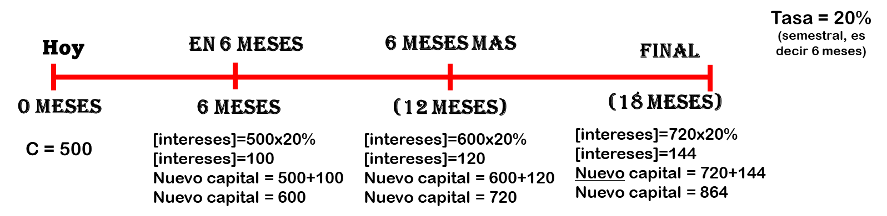
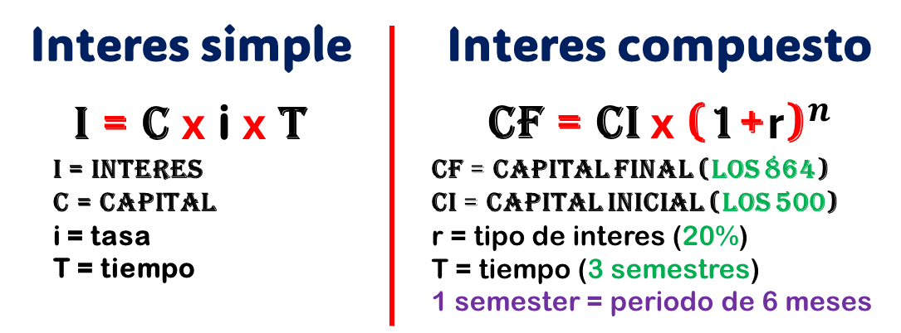
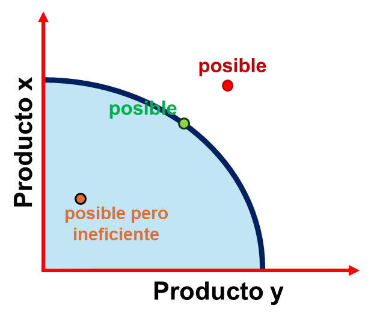

El valor del dinero en el tiempo
Que es la inflacion?
Sabias que en los años 90 podias comprar 10 a 12 panes con 1 sol!!! ? Entre 2000-2005 solo 8 a 10 panes y asi fue bajando hasta ahora (2026) donde a mi solo me alcanza para 2 o 3 panes 🥲
Si ya tienes algo de conocimiento, entonces ya sabes la tipica frase para definir la inflacion:
"La inflación es el aumento generalizado de los precios de los bienes y servicios de una economía durante un periodo de tiempo"
Okey, pero que significa eso exactamente?
Primero debemos entender el concepto "poder adquisito":
Imagina que tienes 100 soles, tu poder adquisito dependera de cuanto puedes comprar con esos 100 soles. Dicho de otro modo, si quieres comprar un pantalon entonces tu poder adquisito dependera de cuanto cueste ese pantalon y cuantos mas puedes comprar.
Otro ejemplo: Imaginemos que ganas 5000 soles, si vives en provincia o en alguna zona alejada de Lima, mas rural .... bueno, ya sabes a lo que me refiero. En esas zonas seras millonario pero si vives en San Isidro o Miraflores, talvez ese dinero sea suficiente o incluso ni te alcanze para pagar el departamentos y otros gasto.
Eso es tu poder adquisito: "cuanto puedes adquirir con lo que tienes?".
El poder adquisito no solo depende en donde vives, tambien depende del tiempo (aqui regresamos al ejemplo del pan). Mañana podras comprar menos cosas con el dinero que tienes ahora.
Entonces... eso significa que tengo que invertir? Bueno, eso lo veremos en otro modulo.
Todos los paises quieren mantener su inflacion en menos del 3% o al menos que se mantenga en 1 cifra (que no pase del 10%)
Si tienes al menos 40 años, entonces recordaras la hiperinflacion en 1985 a 1990 durante el gobierno de Alan Garcia. Yo, gracias a Dios, no vivi esa epoca.
En 1990 se llego hasta 12,377% ¡Hiperinflación! 🚨
A que se debio? No vamos a entrar en detalle pero en resumen fue por lo siguiente:
- Maquinitas: Imprimir billetes sin respaldo (el peor error). Mas dinero + igual cantidad de productos = precios subian = menor poder adquisito
- Fenonemo del niño afecto la produccion, ataques del sendero luminoso y MRTA = mayor gasto publico (para reparar infraestrutura, etc) y eso superaba los ingresos, a ese se le conoce como "Deficit fiscal cronico"
- Debido a la crisis de la deuda, Peru perdio acceso al credito internacional
Entre otras causas. Todo eso duro casi 4 años (1987-1990). Se soluciono con el "fujishock".
En 1994 bajo a 15-20% aproximadamente y desde 1997 la inflacion es solo de una cifra. En 2002 se mantuvo entre 1-3%
Porque el Peru tiene inflacion baja? Es por el crack de Julio Velarde?
Hay varios factores pero debemos saber que Julio Velarde es "el lider" pero detras de el hay un gran equipo esforzandose. Mencionare los factores mas importantes:
- Independencia del BCR (esta es la mas importante): En los 10 ultimos años tuvimos 9 presidentes distintos desde Kuczynski hasta Balcazar, esos es lamentable pero el sol peruano no se ve afectado.
- El gobierno aprendio a manejar de manera responsable el gasto público y niveles de deuda manejables
- Fortaleza del sol peruano: Nuestra moneda tiene un gran respaldo (reservas internacionales) y un superavit comercial. Al 2026, las reservas superan los 97,000 millones de dolares.
- Esto favorece a que los agentes economicos y extranjeros confien en la estabilidad de los precios a largo plazo
Entre otras cosas.
Bueno, todo eso es historia de nuestro querido Peru pero ahora vamos a generalizar un poco para entender las causas y consecuencias de la inflacion.
Hay diferente tipos de inflacion:
- INFLACION POR DEMANDA: Esto se debe a la ley de la oferta y demanda. Si no saben lo que es, les dejo esto:
Por ejemplo: Debido a las lluvias, los camiones no pueden sacar el limon de las chacras o los arboles no producen (oferta baja) pero los peruanos no dejamos de comer ceviche (demanda es mayor a oferta). En el Mercado Santa Anita, en vez de llegar 500 toneladas, solo llegan 50. Entonces, el precio subira ya que hay escases de limones.
- INFLACION POR COSTO: Se produce cuando los costos de producción aumentan, esto origina en el aumento de los precios de las materias primas, salarios o energía. Porejemplo: El aumento del petróleo puede incrementar los costos de transporte, lo que a su vez eleva los precios de muchos productos. Es como una cadena
- INFLACION POR OFERTA MONETARIA: Este es, probablemente, el que nos sucedio. Se refiere a cuando los bancos centrales imprimen más dinero sin un respaldo correspondiente en bienes y servicios. Esto lleva a una disminución del valor del dinero, lo que resulta en un aumento de los precios.
- INFLACION IMPORTADA: paises como Perú, que depende las importaciones, un aumento en los precios de los bienes importados puede provocar inflación.
- Expectativas inflacionarias: Este es menos comun pero puede pasar. Si las empresas esperan que los precios suban en el futuro, pueden aumentar sus precios, lo que de hecho genera inflación
CONSECUENCIAS:
- Perdida de poder adquisito al subir los precios.
- Incertidumbre: La inflación alta y volátil puede hacer que las empresas y consumidores no se confien y dejaran de invertir en el pais y bajara el crecimiento economico.
- La inflación puede beneficiar a los deudores ya que el valor real de la deuda disminuye pero a la vez perjudica a los ahorradores y adeudores, cuyos ahorros pierden valor.
Muy bien, al menos ya tenemos una idea clara de lo que es la inflacion. Hay una pregunta:
Si no hubiera inflación, los precios bajarían. Que pasaria? A eso se le llama deflacion y tambien es algo que hay que evitar.
La deflacion es lo contrario a la inflacion: es una bajada general de los precios
Parece algo bueno no...? con el mismo dinero que tenemos podemos adquirir una mayor cantidad de bienes (mayor poder adquisitivo). Sin embargo, la deflación crea una espiral viciosa de caída de precios, salarios y producción.
La deflación genera un círculo de bajada de precios y esto hace que la economía del pais se estanque.
Interes simple vs compuesto
En algun momento de nuestra vida hemos escuchado estos 2 terminos. Aqui te lo explico de manera directa, si te gustan un poco las matematicas entonces mira las formulas que puse; de lo contrario, simplemente ignoralo:
INTERES SIMPLE
Adivina que... este es el mas simple xd. Un amigo te pidio 500 soles para que le prestes y dice que te los devolvera en 6 meses. Tu le prestas el dinero, como buen amigo, pero le cobras interes. Tal vez le cobres 100 soles mas lo que significa que en 6 meses tu amigo te devolvera 600 soles.
Eso es interes simple, es simple. Porque le cobras interes? Es dinero tuyo que no tendras, la inflacion te hara perder poder adquisitivo y necesitas mas dinero para recuperarlo. Ademas ese dinero lo puedes tener en inversion y generando mas dinero pero decidistes prestarle a tu amigo. Tu amigo tiene que pagar por el tiempo que esta con tu dinero.
Entonces, el interés simple es aquel dinero que una persona o empresa te paga por haberlo usado durante un periodo fijo.
INTERES COMPUESTO
Imagina que despues de los 6 meses tu le vuelves a prestar ese dinero a tu amigo por 2 periodos de 6 meses mas (es decir, 1 año mas). Cuando termine el periodo, recibiras ese nuevo capital e intereses, más unos nuevos intereses.
Te perdistes? Vamos a detallar este ejemplo pero primero debes entender este concepto:
Nota: Por favor no te desanimes al ver mucho texto o numeros. Leelo tranquilamente y lo entenderas. Trate de hacerlo lo mas simple posible.
- Tasa de interes: es el dinero que se cobra por el prestamo, la tasa es en porcentaje ya que depende del monto del dinero prestado. No es lo mismo prestar 100 soles en 6 meses que prestar 800 soles en ese mismo tiempo, 800 soles es una cantidad mas grande y los interes seran mas elevados.
La formula es solo una multiplicacion simple:
[intereses] = [capital]x[tasa en porcentaje].
En este ejemplo la tasa es del 20% semestral.
[intereses]=[600]x[20%] = 100 soles
- Recuerda que el "capital" es el dinero que prestastes a tu amigo. En este caso es 500
Ahora si, detallemos el ejemplo:
Imagina que el te regresa el dinero despues de los 6 meses (te devuelve 500+100=600) y te pide prestado de nuevo, en ese mismo instante, los 600. Ahora el capital o dinero prestado es mas grande.
Le cobras la misma tasa de intereses pero el capital es mayor por lo que los intereses seran mas elevados. Calculémoslo:
[intereses]=[600]x[20%].
Ahora el intereses es de 120. Eso significa que en 6 meses mas tu amigo te devolvera 600+120=720.
Ahora tu amigo de nuevo quiere que le prestes otros 6 meses mas.
Calculémoslo de nuevo:
[intereses]=[720]x[20%]. Nos sale 144. Entonces, tu amigo te devolvera, en 6 meses mas, 720+144=864.

Bueno, tu amigo no te devolvera y pedidara el dinero de nuevo cada 6 meses xd. El solo te pedira una vez y te lo devolvera en 18 meses pero ya sabes como se calcula.
Si te gustan las matematicas y te animas a ver las formulas, aqui esta:

El interes simple es solo multiplicar, el interes compuesto es mas que eso pero al final tu calculadora va a hacerlo todo
Nota: Lo de color verde en intereses compuesto son los datos del ejemplo anterior.
El costo de oportunidad
Este es un concepto muy importante en economia y en la vida cotidiana. Siempre lo aplicas sin darte cuenta.
El fin de semana: dedides pasar la noche con amigos o estudiar en tu casa para el examen de mañana?
Si decides lo primero entonces disfrutaras esa noche pero no estaras preparado para el examen de mañana
Si decides quedarte en casa para estudiar, estaras preparado para el examen pero perderas la oportunidad de pasarla bien con amigos
Bueno, en este ejemplo la respuesta, si eres responsable, es mas facil.
Pongamos un ejemplo a gran escala: Si el Peru decide gastar mil millones en armamento, el costo de oportunidad puede ser los hospitales o escuelas que se podrían haber construido con esa misma cantidad de dinero.
Ahora creo que ya podemos apreciar mejor la importancia del costo de oportunidades. Esto tambien se aplica en inversiones y en todos los aspectos de nuestra vida
Nada es completamente gratis, siempre se pierde algo a cambio. El problema esta en que tanto es lo que pierdes al hacer determinada accion.
En economía, el costo de oportunidad se visualiza mediante la Frontera de Posibilidades de Producción, que muestra el límite de lo que una economía puede producir con sus recursos actuales.
FRONTERA DE POSIBLIDADES DE PRODUCCION:

El Peru tiene 2 productos estrella: Arandanos y esparragos
Si el gobierno decide invertir solo en arandanos, no habra esparrago y viceversa. Que hace el gobierno y los trabajadores?
Imagina que el Peru solo puede producir 100
- Si elegimos el punto de color naranja, estaremos produciendo 25 de esparrago y 25 de arandanos. Es poco y podemos producir mas
- Si elegimos el punto rojo. Hacer 100 de arandanos y 100 de esparragos es imposible
- Si elegimos el punto verde. Es lo mejor ya que haremos 50 de cada uno. Estaremos produciendo todo lo que podemos en ambos productos.